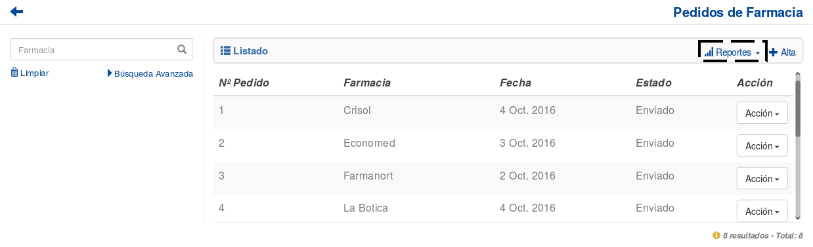
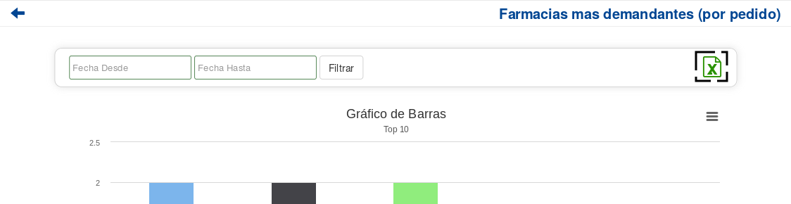

Ventas¶
EN CONSTRUCCION
Reportes¶
Si el usuario desea visualizar y/o generar reportes de estadisticas en relacion a las Ventas, debera seleccionar el boton de Reportes.
Esta funcionalidad cuenta con la modalidad de:
Top 10 Monto de Ventas¶
Si el usuario desea que los reportes se generen en base al volumen de ventas general, debera presionar la opcion Top 10 Monto de Ventas.

Al hacerlo, se mostrara la siguiente pantalla:

Si el usuario desea ajustar el rango de fecha sobre el cual se genera el reporte puede hacerlo utilizando la modalidad de filtrado por fechas:
El usuario tendrá que ingresar los parámetros de búsqueda en el formulario, y presionar el botón Filtrar.
Nota
Todos los campos son opcionales, de no especificarse ningún criterio de búsqueda el sistema mostrará la informacion historica completa.

Si el usuario desea exportar el resultado generado a una planilla de Excel, debera presionar el ícono de excel.
Si el usuario desea exportar el resultado en un formato de imagen PNG, JPEG, PDF o SVG, debera presionar el boton de herramientas de exportacion y seleccionar la opcion correspondiente.